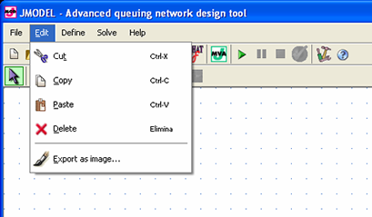

_______________
Cut Ctrl-X |
This command cuts the selected portion of the network and keeps it in the clipboard to paste it later. |
Copy Ctrl-C |
This command copies the selected portion of the network to the clipboard. |
Paste Ctrl-V |
This command pastes the contents of the clipboard into the network area. |
Delete DEL |
This command deleted current selection. |
This command exports current network as an image in a vectorial or raster format. |